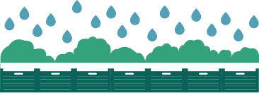

Very efficient
Groen
Op het dak zie je het groene gedeelte: plantenbakken, struiken en wat jonge bloemen.
Blauw
Wist je dat het regenwater hier wordt opgevangen? Onder de beplanting staan een laag kratten die het regenwater opvangen. Dit zorgt voor verkoeling en op warme dagen verdampt dit water om de plantjes te voeden!
Ik heb 't heet! 🥵
Vanwege klimaatverandering verandert de wereld natuurlijk. Dit dak moet zorgen voor een lager energieverbruik en minder kans op wateroverlast. Dit dak is onderdeel van een groter project in samenwerking met Gemeente Amsterdam, Waternet, Metropolder, Rooftop Revolution en verschillende woningcorporaties. Deze partijen onderzoeken of dit type dak kan zorgen voor verkoeling in de steeds maar warmer wordende zomers.
Voordelen
Nuttige regenwater
Onderzoeken
Wist je dat dit dak ook wel het Innovatielab wordt genoemd? Verschillende minoren en lectoraten doen onderzoek naar onder andere verdamping op verschillende soorten daken.
Meer infoKoeling voor het gebouw
Voeding voor de plantjes